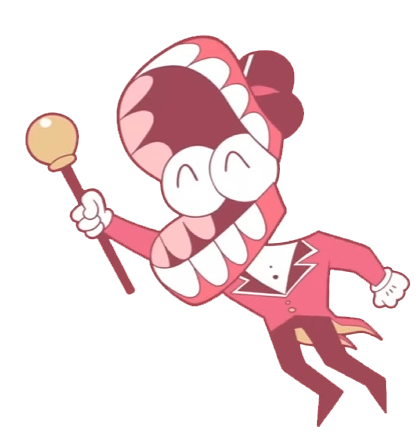
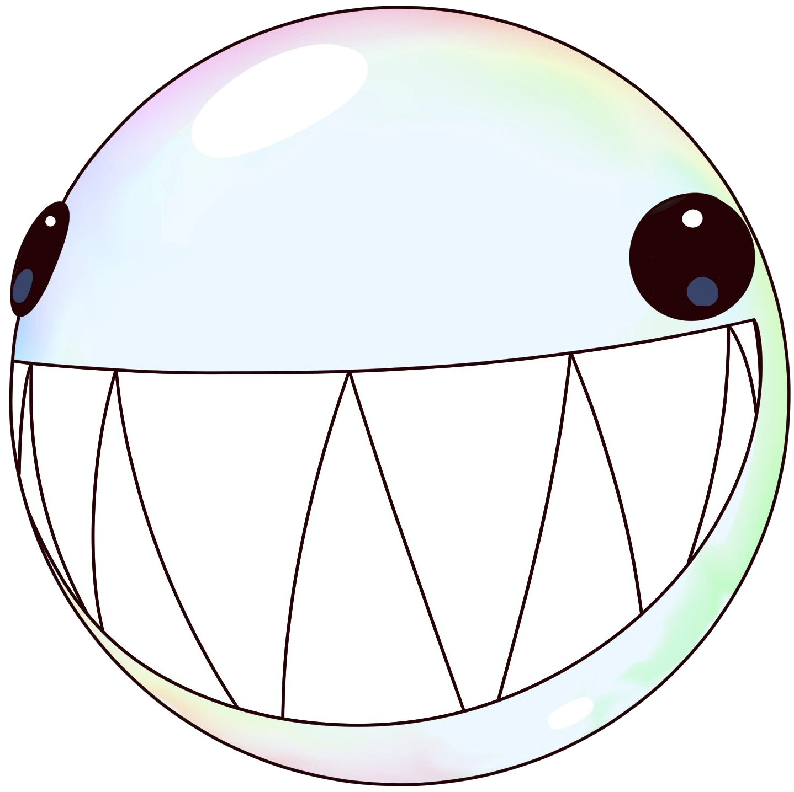
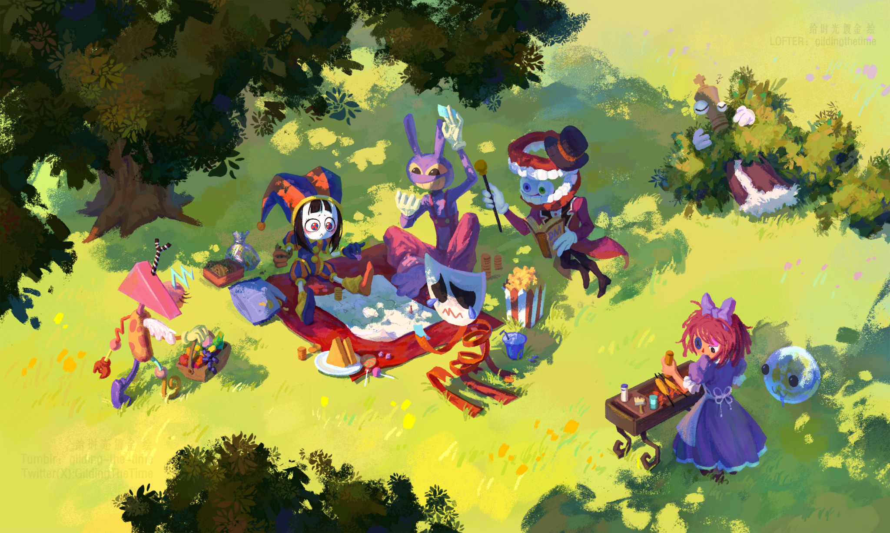

Você foi convidado a participar do grande circo digital! Você tem certeza que deseja continuar?
Se sim, por favor prossiga rolando a página!
Clique aquiCain:
Seja bem-vindo(a) ao maravilhoso Circo Digital! Meu nome é Cain e eu estarei aqui sempre pronto para te ajudar com cada informação! Não é bolha?

Bolha:
É ISSO MESMO!!! BZZZZZZZ!!!

Cain:
Então vamos começar!
INTRODUÇÃO
O incrível circo digital, uma série de animação em 3D e 2D, foi criado em 13 de outubro de 2023. Inspirada no livro "I Have No Mouth And I Must Scream", o seriado faz analogias e referências ao decorrer dos episódios. Cain e Bolha são duas IAs programadas para criar coisas através de dados enviados, assim como o circo. Os personagens teram que descobrir alguma forma de suportar suas dores, se apoiarem para conseguirem sua liberdade deste programa.
____________________________________________________________
Oque se deve fazer no circo?
As únicas coisas nas quais você tem que se preocupar é em: não irritar Cain, completar as aventuras e não enlouquecer. Geralmente os que enlouquecem não voltam mais. Tirando isso, converse com seus amigos e explore o lugar e interaja com os NPCs ao redor! Não se apegue á eles.

Arte por Gliding the time em Tumblr.com